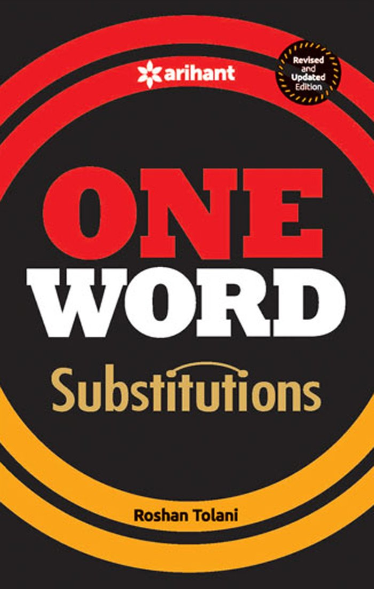
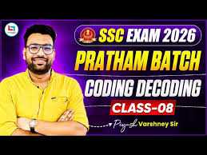

Complete English preparation dashboard for SSC CGL aspirants.

Important vocabulary-based questions for SSC exams.
Start PracticeGrammar correction and sentence improvement practice.
Start PracticeCommon spelling mistakes asked in previous exams.
Start PracticePractice reading passages with exam-level questions.
Start PracticeSpecial handpicked practice questions.
Start PracticeFrequently asked phrasal verbs for SSC CGL.
Start PracticeMaster tense rules through daily practice.
Start PracticeConcept-based noun practice questions.
Start PracticeMixed practice of RC, Cloze Test & Parajumble.
Start PracticeImportant vocabulary-based questions for SSC exams.
Start Practicepractice of Active Passive voice.
Start Practicepractice of Narration.
Start Practicepractice of Passage.
Start Practicepractice of Vocab A To Z.
Start PracticeNew Pattern All Jumbled Asked In SSC CGL.
Start Practice
New Pattern All Coding decoding Question For SSC CGL.
Start PracticeNew Pattern All Letter Series Question For SSC CGL.
Start PracticeTrick And Practice Opposite Letters For Calculation Boost
Start PracticeTrick And Practice Word Place Value Practice For Calculation Boost
Start PracticeIMPORTANT SYNONYMS ASKED IN RECENT EXAMS FOR ALL EXAMS
Start PracticeIMPORTANT OWS ASKED IN RECENT EXAMS FOR SSC CGL EXAMS
Start Practice